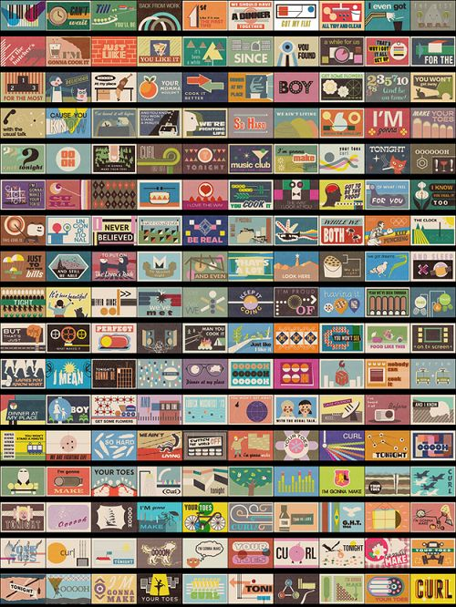

火柴盒上的记忆。 @ Aug 17, 2010
记得小时侯没什么玩具，也没什么娱乐，收藏糖纸、火柴皮成为大大小小孩子们的乐趣。有些糖纸崭新的，记不清楚从何渠道而来，那些五颜六色、各种图案设计的糖纸被夹在书里，每一页夹一张。时常拿出来翻一翻，观赏把玩。
火柴皮是从用过的火柴盒上小心翼翼撕下来的，70年代末80年代初，中国的火柴盒基本呈系列化，有的是4张一个系列，为了集全一个系列到处寻找。火柴皮集中放在塑料袋里收藏，与志同道合的小朋友分享、交流。有时大家还会以物换物，互通有无。
现在的小朋友们不知道会收藏什么？有时想想物资匮乏未必是坏事，否则孩提时代那些不起眼的糖纸和火柴皮，又如何能引发我们那么大的兴趣？它们让记忆中的童年充满色彩和温馨。
布拉格设计师Pavel Fuksa为Navigators的歌曲《my place》 （点击观看MV视频）的MV设计了178个美丽的复古火柴盒。歌曲的歌词全部印在了这些火柴盒上。
如今火柴市场还有过去那么繁荣吗？正好集满一首歌的歌词，非常艰难啊。从印刷成本来看，178个不同的火柴皮，且还是不同图案的，印刷厂一般不会接这样的活，除非提高价格。会不会是为了拍MV，彩打出来贴在火柴盒上的呢？

10 Responses to “火柴盒上的记忆。”
2010-08-17
俺们小时候还收集烟盒的，可惜这个爱好都没有保留下来。现在就剩下邮票了。。。可能还有pin, 中文是叫胸针吧？
2010-08-17
哇，是收藏毛主席像的PIN吗？
2010-08-17
不是。是各种国家地区的pin. 有机会我show给你看看。
2010-08-17
你父亲船员啊？呵呵~
2010-08-17
俺们是船员。
2010-08-17
俺爹收藏了很多毛主席像章，有的还会闪闪发光呢。
2010-08-18
物资匮乏的好吃就是特别容易满足和感到幸福。呵呵。
小时候还疯狂的攒一种叫“鸡屎“的东西，是一种叶子捣烂了后变成的一坨坨松软的，有粘性，色泽如鸡屎的东西。用来砸在小朋友的背后取乐。看收集的糖纸是否是上乘主要是把糖纸放在哈过气的手心，看是否卷起，卷的越厉害越好。
2010-08-18
哇对对对！的确是吹口气，看糖纸在手掌上卷起来…有这么回事，提醒了我，之前完全想不起来了：）话说这鉴别的方式还真是特别。
2010-08-18
好象那个叶子叫ZA叶，很软~收集各种漂亮的糖纸，把它压平在书里，经常拿出来翻翻，还能闻到点奶糖余香..还有香烟里的锡纸层，用铅笔檫轻柔的抹去锡纸的褶皱，银色的锡纸会跳舞~~
2010-08-19
^_^，看到同道了。
还有彩色玻璃弹子、我奶奶的香烟纸、巧克力糖纸、不同品牌的HB铅笔、小人书。。
Leave A Reply
存档只读，评论已关闭。